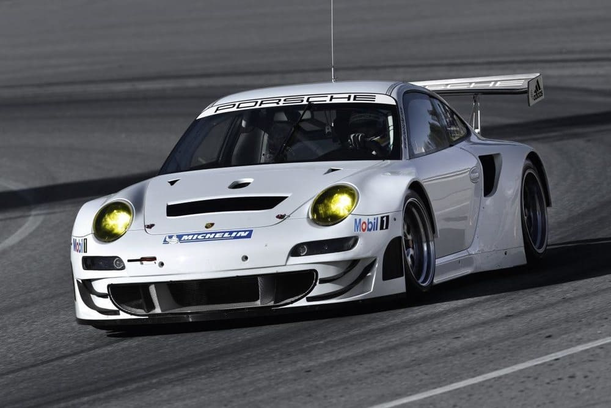

La historia del RSR
La denominación RSR de Porsche es sinónimo de competición, de ofrecer las máximas prestaciones en circuito, así como la mejor combinación entre rendimiento, eficiencia y manejabilidad. Desde hace 47 años, el nueveonce desarrollado para competición y con la insignia RSR ha estado presente en los campeonatos del mundo más prestigiosos.

El primer modelo de la serie, el 911 Carrera RSR 2.8, debutó por todo lo alto en 1973, logrando el triunfo absoluto en las 24 Horas de Daytona.
El gran pionero
El pionero de todos los RSR de Porsche es el 911 Carrera RSR 2.8, creado sobre la base del Carrera RS 2.7, como prototipo para cumplir la normativa FIA para los Grupo 4.
Llegó con pocos cambios respecto al modelo de producción, con llantas traseras 50 mm más anchas, aumento de la cilindrada del motor bóxer con un diámetro de cilindros mayor y la conocida como «cola de pato» sobre el alerón posterior. Durante su primera temporada de competición, en 1973, la firma germana lanzó una nueva versión con un motor bóxer de tres litros. Le siguió un 2.1 con turbo, y en 1974, el RSR fue el primer vehículo con turbocompresor que llegó a Le Mans. A pesar de ello, el motor atmosférico de gran cilindrada sigue siendo el preferido en la actualidad para las carreras de GT.
Desarrollo del motor bóxer de gran rendimiento
En 1973, los prototipos con motores de 2.8 litros tenían 290 CV, mientras que los tres litros, que llegaron al año siguiente, ya alcanzaban los 330 CV. El propulsor derivado del Carrera RS de producción en serie recibió pequeñas modificaciones. Su diámetro era de 92 mm, pero la carrera se mantuvo en 70,4 mm, igual que el modelo de carretera.
En el nuevo Porsche 911 RSR, basado en el 911 GT3 RS homologado para carretera, el motor se ha montado por delante del eje trasero para beneficiarse de un reparto de pesos más equilibrado. En configuración de carrera, el último bóxer de 4.2 litros del RSR cuenta con 515 CV, limitado para poder competir en el WEC y en el campeonato IMSA norteamericano. El par se ha más que duplicado en comparación con el Porsche 911 Carrera RSR 2.8, haciendo mejorar la eficiencia. La primera caja de cambios manual de cinco velocidades se ha cambiado por una secuencial de seis velocidades con levas en el volante.
El actual Porsche 911 RSR está propulsado por un motor de seis cilindros de 4.2 litros, el mayor motor bóxer jamás instalado en un 911 oficial de competición. Además, ha mejorado en eficiencia, fiabilidad y manejabilidad.
Todos estos desarrollos mecánicos, unidos a cambios en el chasis para ser más ligero, se han visto reflejados en el cronómetro. En 1973, Gijs van Lennep y Herbert Müller conquistaron la victoria en su categoría y un cuarto puesto absoluto en las 24 Horas de Le Mans, con un tiempo medio por vuelta de 4:20 minutos. Hoy en día, aunque una vuelta en Le Mans es 14 metros más corta que en 1973, los tiempos son muy distintos. En 2018, el piloto Gianmaria Bruni estableció un nuevo récord para vehículos GTE, con un tiempo de 3:47.504 minutos. Habrá que esperar al próximo mes de septiembre, para ver si el nuevo Porsche 911 RSR mejora estos tiempos en Le Mans.